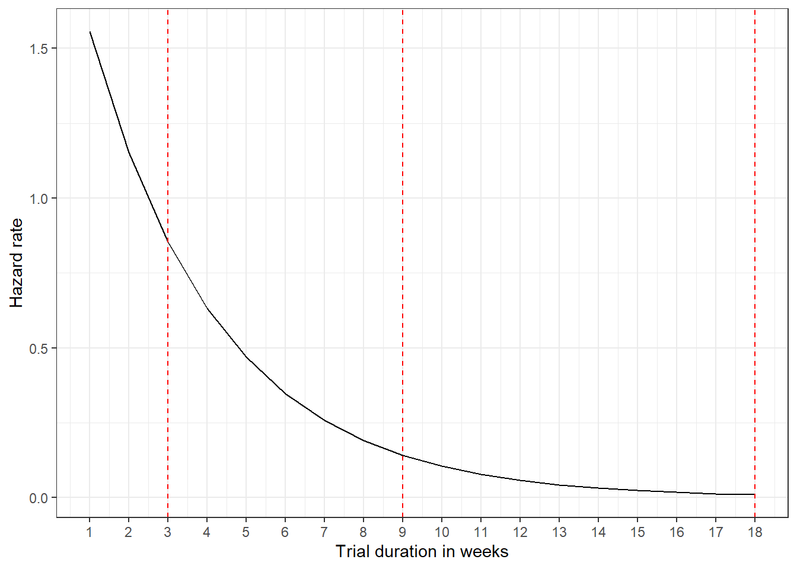

| trial_id | subject_id | status | time | arm_type | age | sex | other_covariates |
|---|---|---|---|---|---|---|---|
| 1 | SUBJ3418 | 1 | 26 | Placebo | 56.8 | M | … |
| 1 | SUBJ5314 | 0 | 3 | Active | 72.1 | M | … |
| 1 | SUBJ3226 | 0 | 21 | Active | 45.8 | F | … |
| 1 | SUBJ451 | 1 | 26 | Placebo | 49.3 | M | … |
Trial conduct model
Summary
We will construct a conduct-stage model comprising participant-level and trial-level sub-models. The trial-level model will allow us to generate a baseline hazard rate for any trial conditional on trial design features. The participant-level model will enable us to modify the baseline hazard rate by applying hazard ratios for participant-level characteristics.
Partipant sub-model
Data
Model description
We will fit a stratified Cox model with the inclusion of participant-level characteristics. We will stratify by trial to allow for variation in baseline hazard across trials without explicit modelling. Stratification will produce a single set of hazard ratios adjusted relative to the baseline hazard of each trial.
The stratified model maintains the assumption that predictors have a constant effect on the hazard rate over time. As such, we will test for proportional hazards by calculating Schoenfeld residuals from the model plotted against time to identify any non-random residual patterns. We will implement this check using cox.zph from the survival package.
Model code
library(survival)
cox <- coxph(Surv(time, status) ~ age + sex + treatment + strata(trial_id), data = df)Model code (with coefficient shrinkage)
We will apply LASSO (Least absolute shrinkage and selection operator shrinkage using the glmnet package for cox models. As this does not support stratification, we will fit a Cox model to each trial and meta-analyse the outputs.
library(glmnet)
# Fit a penalised cox model for each trial
df_cox <- df %>%
group_by(trial_id) %>%
group_map(~ {
x <- model.matrix(~ age + sex + treatment, data = .x)[, -1]
y <- with(.x, Surv(time, status))
fit <- cv.glmnet(x, y, family = "cox", alpha = 1) # LASSO applied
coefs <- as.matrix(coef(fit, s = "lambda.min"))
data.frame(term = rownames(coefs), estimate = coefs[,1])
})
# Filter out zero coefficients
df_cox_filter <- df %>%
filter(estimate != 0 & term != "(Intercept)")
# Meta-analyse for each variable (individually as an example)
age_meta_df <- df_cox_filter %>%
filter(term == "age") %>%
mutate(var = stderror)
age_meta <- rma(yi = estimate, vi = var, data = age_meta)Trial sub-model
Data
| trial_id | r | N | t | arm_type | blinding | mean_age | prop_female |
|---|---|---|---|---|---|---|---|
| 1 | 25 | 100 | 26 | Placebo | Double | 54.7 | 49.1 |
| 1 | 31 | 101 | 26 | Active | Double | 57.8 | 50.9 |
| 2 | 73 | 203 | 52 | Active | Triple | 63.1 | 52.8 |
| 2 | 91 | 204 | 52 | Placebo | Triple | 59.7 | 48.6 |
Model description
The trial sub-model will be similar to the design model, but with the addition of participant characteristics that are also present in IPD trials (e.g. age, sex, BMI). By doing so, we can introduce an offset to this model that incorporates the effects of participant characteristics in both models as a fixed effect.
Model code
data {
int<lower=1> I; // Number of trials
int<lower=0> r[I]; // Observed attrition events per trial
int<lower=0> N[I]; // Number of participants per trial
vector[I] dt; // Time in weeks per trial
vector[I] var1; // Covariate
vector[I] arm; // Treatment arm (0 = placebo, 1 = active)
real beta_ext // Coefficient for covariate in participant sub-model
}
parameters {
real b_mu; // Log-baseline hazard rate
vector[I] u; // Random intercept for rate
real a_raw; // Shape intercept
real beta; // Covariate coefficient
real gamma; // Treatment arm effect
}
transformed parameters {
vector[I] b; // Rate
vector[I] a; // Shape
vector[I] p; // Probability of attrition
for (i in 1:I) {
a[i] = a_raw + (beta + beta_ext) * var1[i] + gamma * arm[i];
b[i] = exp(b_mu + (beta + beta_ext) * var1[i] + gamma * arm[i] + u[i]);
p[i] = 1 - exp(-b[i]/a[i] * (exp(a[i] * dt[i]) - 1));
// Check values
// if (i <= 5) {
// print("a_raw = ", a_raw, ", var1[i] = ", var1[i], "beta = ", beta);
// print("a = ", a[i], ", b[i] = ", b[i]);
// print("p[i] = ", p[i]);
// }
}
}
model {
b_mu ~ normal(0, 1);
a_raw ~ normal(0, 1);
beta ~ normal(0, 1);
u ~ normal(0, 1);
gamma ~ normal(0, 1);
// Likelihood
for (i in 1:I) {
r[i] ~ binomial(N[i], p[i]);
}
}
generated quantities {
vector[I] r_new; // Predicted count
vector[I] p_new; // Predicted probability of attrition
vector[I] rate; // Baseline hazard rate
for (i in 1:I) {
p_new[i] = 1 - exp(-b[i]/a[i] * (exp(a[i] * dt[i]) - 1));
r_new[i] = binomial_rng(N[i], p_new[i]);
rate[i] = exp(b_mu);
}
}Prediction
By fitting participant and trial sub-models, we can extract the outputs of both to make predictions about attrition rates over time. Like the design model, we will make predictions using the Gompertz hazard function, plugging in shape extracted from the trial sub-model, and rate as the hazard ratio obtained from the participant sub-model.
| time | a | hr | haz |
|---|---|---|---|
| 1 | -0.3 | 2.1 | 1.5557183 |
| 2 | -0.3 | 2.1 | 1.1525044 |
| 3 | -0.3 | 2.1 | 0.8537963 |
| 4 | -0.3 | 2.1 | 0.6325078 |
| 5 | -0.3 | 2.1 | 0.4685733 |
| 6 | -0.3 | 2.1 | 0.3471277 |
| 7 | -0.3 | 2.1 | 0.2571585 |
| 8 | -0.3 | 2.1 | 0.1905077 |
| 9 | -0.3 | 2.1 | 0.1411316 |
| 10 | -0.3 | 2.1 | 0.1045528 |
| 11 | -0.3 | 2.1 | 0.0774547 |
| 12 | -0.3 | 2.1 | 0.0573798 |
| 13 | -0.3 | 2.1 | 0.0425080 |
| 14 | -0.3 | 2.1 | 0.0314907 |
| 15 | -0.3 | 2.1 | 0.0233289 |
| 16 | -0.3 | 2.1 | 0.0172825 |
| 17 | -0.3 | 2.1 | 0.0128032 |
| 18 | -0.3 | 2.1 | 0.0094848 |
